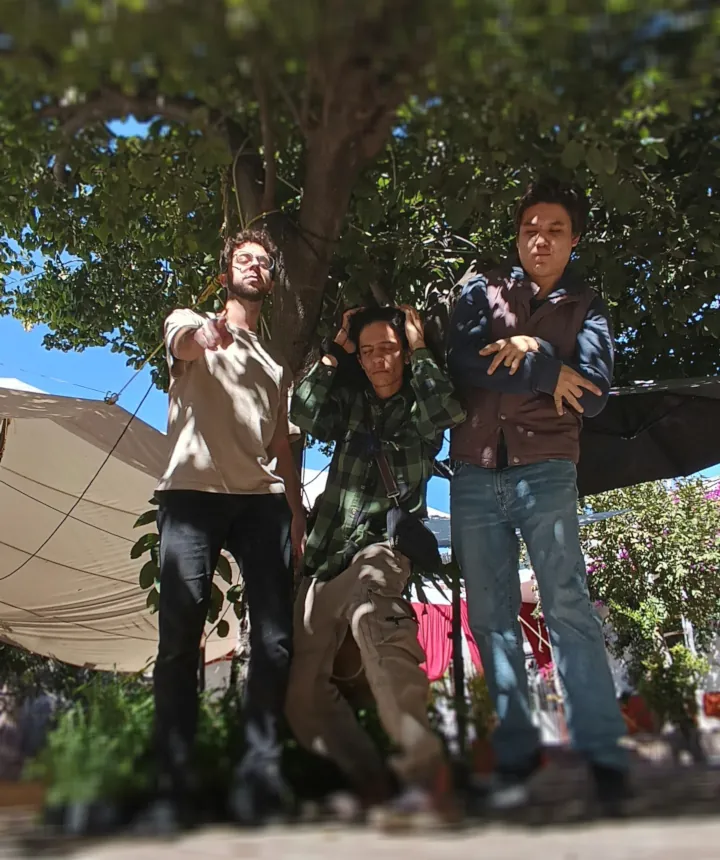
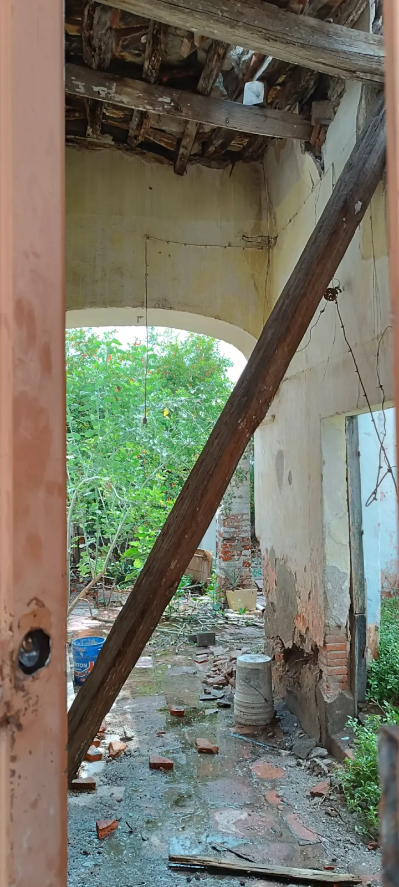
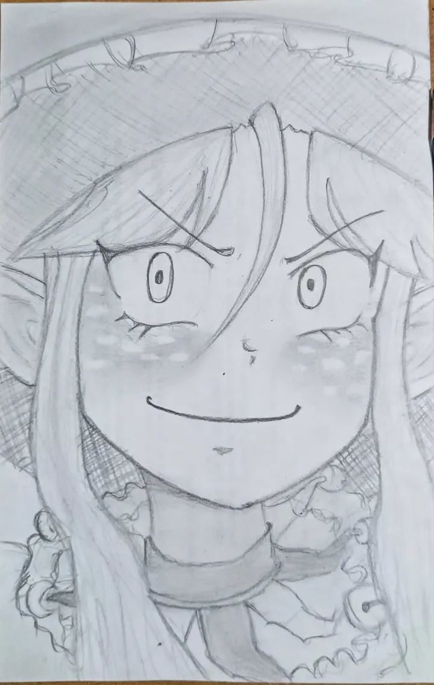

Hey there! Press A to advance the dialogue...|Okay cool, my name's Fersi|I'm the digital ghost of my creator...|He's the guy in the gif below...|What a mess, huh?|Anyways... Press the ▼ to go to the next panel...
Yeah, so... These are my childhood friends|I fucking love this beautiful humans|When we hang out...|...we serve ESL textbook cover vibes 0.o

This is a random place I saw downtown|Like... what the actual fuck is going on here?!?|This is Queretaro's dt btw|I was just walking and passed by an open door...|...and like saw this cooool portal to nowhere c:

This is a bracelet I made uwu|The idea is to use it as meditation aid|Kind of like a Mala|But this specific pattern of beads is meant for boxbreathing c:|like a type of bead for each of the four parts of the breathing cycle
This is a comic panel I copied from Marionetta!!!|Marionetta is one of my favorite Webtoons ever!|The artist Míriam Bonastre Tur is incredibly talented...|Definitely check it out...
